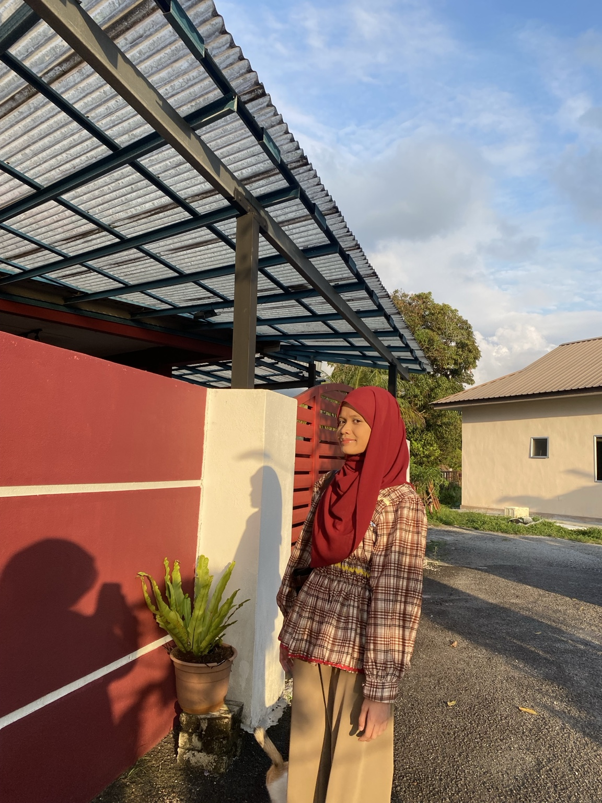

MEET THE DEVELOPER
About Me
Get to know the person behind Malaysia Mini Tour.

THE PERSON BEHIND THE WEBSITE
Hello, I'm Miza!
Hi! My name is Miza Farzana binti Ismail, and I am currently pursuing a Diploma in Digital Business at Kolej Poly-Tech MARA (KPTM) Ipoh. I developed Malaysia Mini Tour as part of my web design project to introduce the beauty and uniqueness of Malaysia to a wider audience.
The Story Behind Malaysia Mini Tour
I chose Malaysia as the main theme of my website because the country has many fascinating places, diverse cultures and delicious traditional foods. From the famous landmarks in Kuala Lumpur to the beautiful beaches of Langkawi and the historical attractions in Penang, Malaysia offers many exciting experiences for visitors to discover.
Through Malaysia Mini Tour, I aim to create a simple and informative platform where visitors can explore tourist attractions, learn about Malaysian traditions and discover popular local dishes. I hope this website helps people gain a better understanding of Malaysia and encourages them to appreciate the country’s natural beauty and cultural heritage.
Working on this project has allowed me to express my creativity while improving my website design and digital skills. It has also taught me how to organise information and present it in an attractive and user-friendly way. I hope Malaysia Mini Tour will inspire more people to explore Malaysia and enjoy the wonderful experiences it has to offer.
FIND THE LOCATION
Explore Kuala Kangsar
Use the interactive map below to view Kuala Kangsar, Perak. You can zoom in and out or open the map in Google Maps.
Location: Kuala Kangsar, Perak, Malaysia · Open in Google Maps ↗